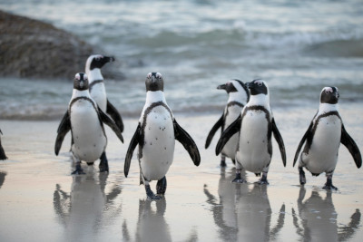

Pinguim



algumas curiosidades sobre os pinguins
- Pinguins podem nadar a até 36 km/h, usando suas asas como nadadeiras.
- Os machos dos pinguins-imperadores cuidam dos ovos enquanto as fêmeas buscam comida.
- A gordura corporal e as penas impermeáveis os mantêm aquecidos no frio extremo.
- A palavra "pinguim" vem do galês "pen gwyn", que significa "cabeça branca".
- Pinguins são conhecidos por tropeçar ou deslizar na barriga, o que os torna cômicos.
- Exploradores como Ernest Shackleton relataram colônias gigantescas de pinguins na Antártida.